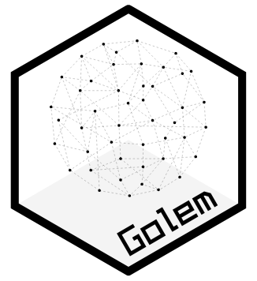
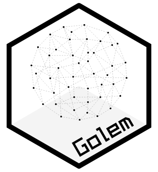

Golem Lab
Graphs and Ontologies for Literary Evolution Models
A 5-year (2023-2027) research project funded by the European Union (ERC StG)


Publications
No matching items

Golem Lab
Graphs and Ontologies for Literary Evolution Models
A 5-year (2023-2027) research project funded by the European Union (ERC StG)